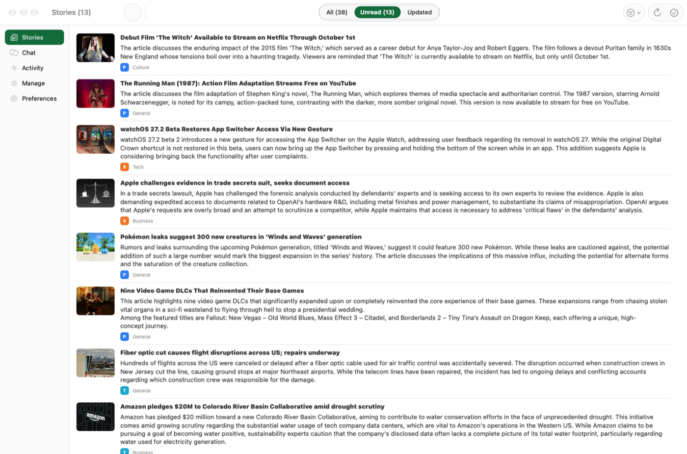
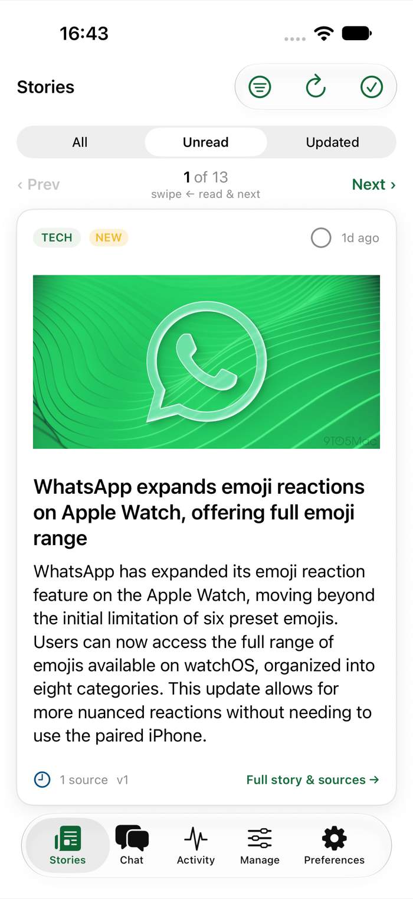
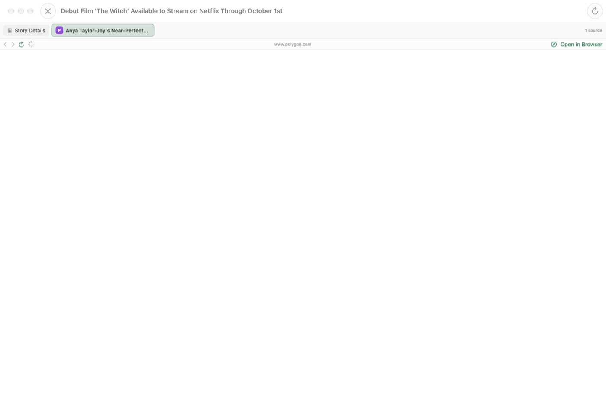
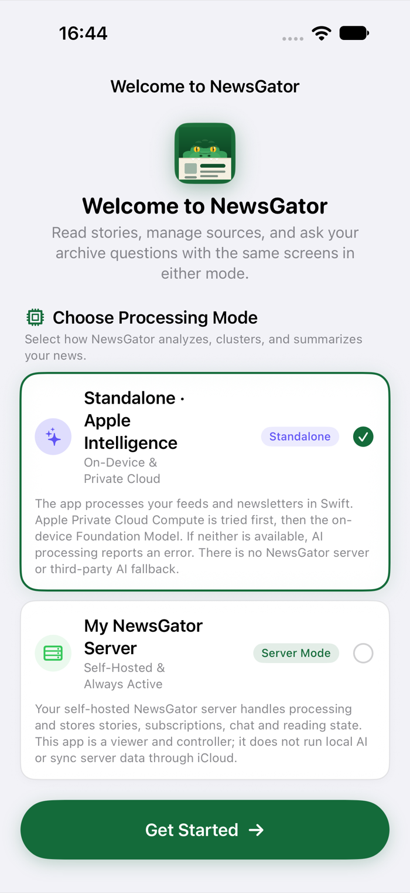
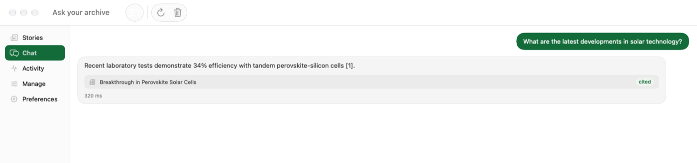
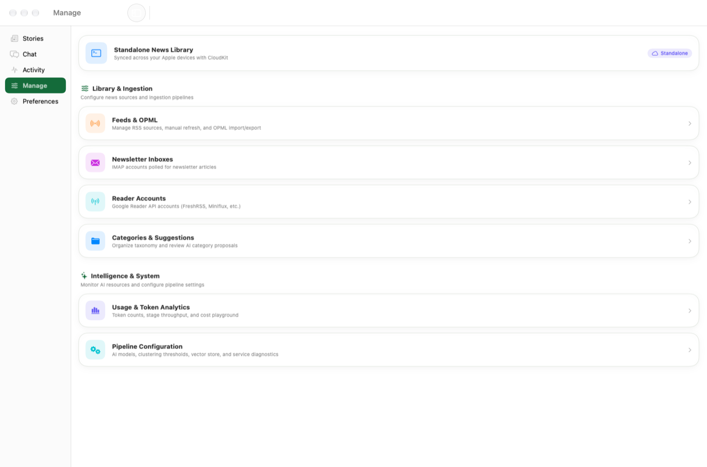
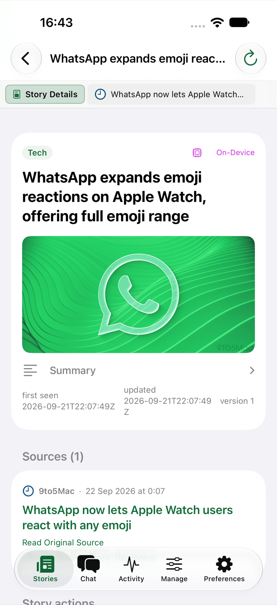

NewsGator reads your RSS feeds and your newsletter inbox, merges every article covering the same event into one Story, and hands you a headline and a 60-second summary. Want the full piece? One tap sends you to the real publisher's page — ads and all, because they did the reporting. No server to run? Turn on Apple Intelligence and it works standalone.
I read the news every day, and it always felt like a struggle. I searched for the right app for years and never found it. this is the result.
— the author, after one RSS reader too many
We are submerged. Knowing what to read is harder than reading itself — and the classic RSS workflow makes it worse, not better.
You subscribe to many sources because you want different angles — and get hundreds of items a day. Nobody has that time. So you skim, anxious, sure you're missing what matters.
Every outlet covers the same event. You read one, then a second — and the other three become pure noise you still have to wade through and dismiss, every single day.
A catchy title, an intro that says nothing. Click to the site, dismiss the cookie banner, scroll past the ads… to discover there was nothing in the article. Time is the most precious thing you have.
Not another reader with more buttons. These four ideas are the whole point.
Every article about the same real-world event — from twelve different outlets — collapses into a single, versioned Story instead of twelve entries in your feed. New facts update it in place; it never comes back as fake "unread" noise.
embedding + clustering, same event → same Story
No clickbait, no "you won't believe what happened next." Just what happened, who's involved, and why it matters — in your language, however many languages the sources were written in. Swipe through a whole day in a couple of minutes.
swipe left = read → next · swipe right = back
The summary is a filter, never a replacement. One tap opens the actual publisher's page — their layout, their ads, their subscription prompts, all intact. They did the reporting; they get the visit and the ad impression. No paywall bypassing, ever — the deal is a fair one.
"Read Original Source" → the real site, unmodified
The self-hosted server is one way to run NewsGator — for people who can and want to run a box with an LLM. For everyone else, the native iOS & macOS apps run the entire pipeline on-device: Apple Private Cloud Compute first, the on-device model as fallback. No server, no third-party AI, ever.
Private Cloud Compute → on-device model · nothing else
This is not a way to read the news.
It's a way to choose the news worth reading.
The summary exists to help you decide, never to replace the article. The last step is always the same: open the piece and read it for real.
Every Story lists every source it was built from, one tap away. Publishers did the work — they deserve the click, the ad impression, and your attention.
Summaries can be wrong. Models can be biased. No claim of truth here — just a triage tool. Trust, then verify at the source.
The same Stories, chat, and reading experience — powered by whichever engine fits your household.
One Docker container you run yourself. Full multi-user support, any OpenAI-compatible LLM, full observability.
The native iOS 27+ / macOS 27+ apps run the whole pipeline on-device. No server, no account, no third-party AI.
Here's the idea: the server is one way to run NewsGator — for the people who can, and want to, host a box with an LLM on it. It's powerful, it's multi-user, and it's the deepest option. But it's not for everyone, and it shouldn't have to be.
For everybody else, there's the standalone mode. It needs exactly one thing: one Apple-Intelligence-capable device at home — an iPhone, iPad or Mac. Because reading state and the story library sync through your own iCloud account, that single capable device is enough to unlock the same clustering, summarizing and chat features for every other device signed into the same account — no primary device, no server, no coordinator required. Point an older iPad that can't run Apple Intelligence at your library, and it reads Stories that a newer iPhone quietly built in the background.
Same pipeline. Same Stories. Same honest summaries. You just get to pick who does the thinking: your own server, or Apple's.
You give it RSS feeds. It does the boring, repetitive part.
Polls your feeds like any reader — plus your newsletter mailbox (each sender becomes a feed, the LLM strips the footer/sponsor chrome and keeps the human-written intro) and third-party reader accounts (FreshRSS, Miniflux, Inoreader…) with bidirectional read-state sync. Nothing is ever lost, even across restarts.
Goes and gets the real article content — not the three-line RSS teaser designed to make you click. Images included, never behind a paywall workaround.
An LLM writes an honest headline and a compact summary — in the language you actually think in, whatever the source wrote in, with on-demand translation for sharing.
Each article is embedded and compared against existing Stories. Same event? It joins that Story instead of creating noise — and if it brings new facts, the merged summary and headline are refreshed.
Open the app, scroll or swipe through a handful of Stories in about a minute, and deep-dive the ones that matter — at the source, on the publisher's own page, as it should be.
Not sure where you read something? Just ask. Your question is matched against every Story by meaning, and the answer cites its sources as clickable cards — so you can jump straight to the original.
A web app on your desktop, native apps on iPhone and Mac. Stories you skipped stay read; Stories that gained new facts come back badged "updated" — never as fake unread.



Duplicate coverage merges into one Story with a versioned, evolving summary.
Point an IMAP folder at your newsletters — per user, read-only — and they join the same pipeline as any feed.
Bring an existing FreshRSS, Miniflux or Inoreader account — read state syncs both ways.
Ask questions across everything you've loaded — the answer is grounded in your Stories and cites its sources.
Headlines and summaries in the language you configure, with cached on-demand translations per reader.
Share a Story to family in their language — the link goes straight to the original sources.
One tap pushes a permanent, self-contained copy to your Readeck instance.
Read stays read. New facts on a read Story badge it "updated", never unread.
Admin-managed accounts; every reader has their own feeds, read state, and language.
Installable web app on iOS & Android, or the native SwiftUI app on iPhone, iPad and Mac.
Your distilled Stories are themselves an RSS feed — read them back in any reader you like.
Live activity stream of every pipeline decision, a real-time LLM interaction trace, and a usage dashboard.
Free and open source. Self-host it, or run it on Apple Intelligence. Either way — no ads, no cookie banner, and the publishers you actually read still get the click.